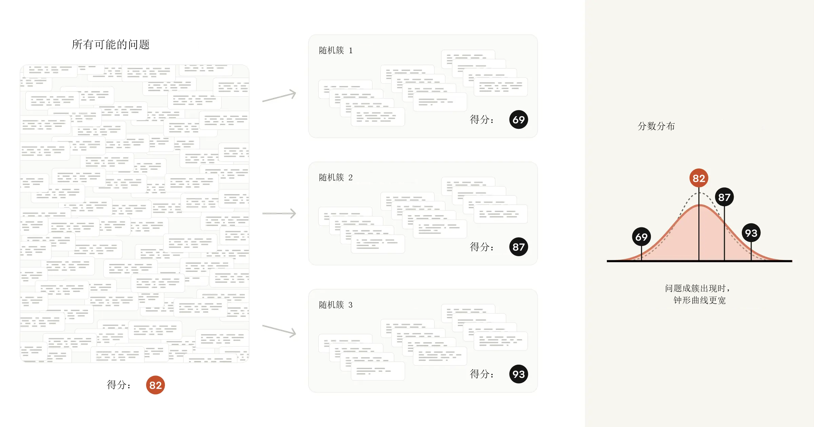

模型评测的统计方法
📖 中文摘要
专业术语注解
标准误差：衡量统计量估计精度的指标，越小估计越可靠置信区间：给出真实值以95%概率落于其间的取值范围中心极限定理：统计学的核心定理，解释样本均值为何呈正态分布聚类标准误：题目成组相关时修正误差估计的方法配对差异检验：利用同题对两个模型差值的统计检验方法功效分析：评估统计检验能否发现真实差异的能力📄 中文全文
- 类别： 评估（Evaluations）
- 来源： https://www.anthropic.com/research/statistical-approach-to-model-evals
评估（Evaluations） 2024 年 11 月 19 日 阅读论文 假设一个 AI 模型在某个受关注的基准上优于另一个模型——例如，测试其通用知识，或解决计算机编码问题的能力。这种能力差异是真实的吗，还是某个模型只是在基准问题的选择上运气好？
鉴于公众对 AI 模型评估（非正式地称为「evals」）的兴趣之大，这个问题在 AI 研究界中出人意料地缺乏研究。本月，我们发表了一篇新研究论文，试图严格地回答这个问题。该论文借鉴统计理论和实验设计文献，向 AI 研究界提出了一些关于以科学信息方式报告评估结果的建议。在这篇文章中，我们简要介绍这些报告建议及其背后的逻辑。
建议 #1：使用中心极限定理
评估通常由数百或数千个不相关的问题组成。例如，MMLU 包含的问题五花八门：
- 谁发现了第一种病毒？
- 𝑓(𝑥)=4−5𝑥 的逆函数是什么？
- 谁说过「法理学是法律的眼睛」？
为了计算总体评估分数，每个问题被单独评分，然后总体分数（通常）是这些问题分数的简单平均值。通常，研究者把注意力集中在这个观察到的平均值上。但在我们的论文中，我们认为真正感兴趣的对象不应该是_观察到的_平均值，而应该是所有可能问题上的_理论_平均值。因此，如果我们设想评估问题来自一个不可见的「问题宇宙」，我们就可以利用统计理论来了解该宇宙中的平均分数——也就是说，我们可以衡量潜在的_技能_，而不受「抽签运气」的影响。
 如果我们设想评估问题来自一个「问题宇宙」，那么评估分数将倾向于遵循正态分布，以所有可能问题的平均分数为中心。
如果我们设想评估问题来自一个「问题宇宙」，那么评估分数将倾向于遵循正态分布，以所有可能问题的平均分数为中心。
这种表述为我们带来了分析上的稳健性：如果创建一个新评估，其问题与原始评估具有相同的难度分布，我们通常应该预期我们最初的结论仍然成立。
用技术术语来说：在中心极限定理（Central Limit Theorem）相当温和的条件下，从同一底层分布中抽取的几个随机样本的均值将倾向于遵循正态分布。该正态分布的标准差（或宽度）通常被称为平均值的标准误差（standard error of the mean，SEM）。在我们的论文中，我们鼓励研究者报告由中心极限定理推导出的 SEM，并附在每个计算出的评估分数旁边——我们还向研究者展示了如何使用 SEM 来量化两个模型之间理论均值的差异。通过从平均分数中加减 1.96 × SEM，可以从 SEM 计算出 95% 的置信区间。
建议 #2：聚类标准误差
许多评估违反了上述问题独立选择的假设，而是由紧密相关的问题组组成。例如，阅读理解评估中的几个问题可能询问同一段文本。遵循这种模式的流行评估包括 DROP、QuAC、RACE 和 SQuAD。
对于这些评估，每个问题从「问题宇宙」中的选择不再独立。因为包含关于同一段文本的几个问题所提供的信息，少于选择相同数量关于不同文本段落的问题，所以将中心极限定理天真地应用于非独立问题的情况，将导致我们低估标准误差——并可能误导分析者从数据中得出错误的结论。
幸运的是，聚类标准误差问题已在社会科学中得到广泛研究。当问题的包含是非独立的时，我们建议在随机化单位（例如文本段落）上对标准误差进行聚类，并且我们在论文中提供了适用的公式。

如果问题以相关簇的形式出现——阅读理解评估中的常见模式——评估分数将比非聚类情况更分散。在实践中，我们发现流行评估上的聚类标准误差可能是朴素标准误差的三倍以上。忽略问题聚类可能导致研究者无意中检测到实际上并不存在的模型能力差异。
建议 #3：减少问题内的方差
方差是衡量随机变量分散程度的指标。评估分数的方差是上述平均值的标准误差的平方；这个量取决于每个单独评估问题分数上的方差量。
我们论文的一个关键见解是将模型在特定问题上的分数分解为两个相加的项：
- 平均分数（如果同一个问题被无限次询问，模型将达到的平均分数——即使模型每次可能产生不同的答案）；以及
- 一个随机分量（已实现的问题分数与该问题的平均分数之间的差异）。
得益于全方差定律，减少随机分量的方差直接导致总体均值的标准误差更小，从而获得更高的统计精度。我们的论文根据模型在回答之前是否被要求逐步思考（一种称为 CoT 或思维链推理的提示技术），强调了减少随机分量方差的两种策略。
如果评估使用思维链推理，我们建议从同一模型多次重新采样答案，并使用问题级别的平均值作为输入中心极限定理的问题分数。我们注意到 Inspect 框架通过其 epochs 参数正确地以这种方式计算标准误差。
 如果模型非确定性地产生答案，那么每个问题生成（并评分）多个答案将导致评估分数不那么分散。
如果模型非确定性地产生答案，那么每个问题生成（并评分）多个答案将导致评估分数不那么分散。
如果评估不使用思维链推理（即其答案不是「路径依赖」的），我们注意到分数中的随机分量通常可以通过语言模型的下一词元概率完全消除。例如，如果一个选择题的正确答案是「B」，我们只需使用模型产生「B」这个词元的概率作为问题分数。我们不知道有任何开源评估框架实现了这种技术。
建议 #4：分析配对差异
评估分数本身没有任何意义；它们只有在彼此相关时才有意义（一个模型优于另一个模型，或与另一个模型打平，或优于一个人）。但是，两个模型之间的测量差异可能是由评估中问题的具体选择，以及模型答案的随机性造成的吗？我们可以使用双样本 t 检验，仅使用从两个评估分数计算出的平均值标准误差来确定。
然而，双样本检验忽略了评估数据内部的隐藏结构。由于问题列表在模型之间是共享的，进行配对差异检验可以让我们消除问题难度的方差，专注于回答的方差。在我们的论文中，我们展示了配对差异检验的结果将如何与两个模型问题分数之间的皮尔逊相关系数相关。当相关系数更高时，平均差的标准误差将更小。
在实践中，我们发现前沿模型在流行评估上的问题分数相关性相当大——在 −1 到 +1 的量表上介于 0.3 和 0.7 之间。换句话说，前沿模型总体上倾向于在同一批问题上对或错。因此，配对差异分析代表了一种非常适合 AI 模型评估的「免费」方差减少技术。因此，为了从数据中提取最清晰的信号，我们的论文建议在比较两个或多个模型时报告配对信息——平均差、标准误差、置信区间和相关性。
建议 #5：使用功效分析
统计显著性的另一面是统计功效，即统计检验在假设差异存在的情况下检测两个模型之间差异的能力。如果评估没有很多问题，与任何统计检验相关的置信区间往往会很宽。这意味着模型需要有较大的潜在能力差异才能产生统计显著的结果——而小的差异很可能不会被检测到。功效分析指的是观察次数、统计功效、假阳性率和所关注的效应量之间的数学关系。
在我们的论文中，我们展示了如何将功效分析的概念应用于评估。具体来说，我们向研究者展示了如何提出一个假设（如_模型 A 比模型 B 高出 3 个百分点_）并计算评估应该包含多少问题，才能针对零假设（如_模型 A 和模型 B 打平_）检验这个假设。
我们相信功效分析将在许多情况下被证明对研究者有帮助。我们的功效公式将告知模型评估者从问题中重新采样答案的次数（见上面的建议 #3），以及随机子样本中在保留所需功效属性的同时可以包含的问题数量。研究者可能会使用功效公式得出结论：一个可用问题数量有限的评估不值得在特定的一对模型上运行。新评估的开发者可能希望使用该公式来帮助决定包含多少问题。
结论
统计学是在存在噪声的情况下进行测量的科学。评估带来了许多实际的挑战，而真正的评估科学仍然发展不足。统计学只能构成评估科学的一个方面——但它是关键的一个方面，因为一门实证科学的好坏取决于其测量工具。我们希望我们论文 为评估添加误差线：语言模型评估的统计方法中的建议，将帮助 AI 研究者比以往更精确、更清晰地计算、解读和交流评估数字——我们也鼓励 AI 社区的研究者探索实验设计中的其他技术，以便他们能更准确地理解他们想要测量的所有内容。
相关内容
了解更多关于 Claude 数学能力的信息
Claude 的一个未发布的研究版本在与黎曼猜想相关的问题上取得了进展。它改进了黎曼 zeta 函数满足该猜想的零点比例的一个长期未破的下界，将其从 41.6% 提高到 67.2%。 了解更多
用 Claude 发现密码学弱点
密码学算法。第一个攻击显著削弱了 HAWK——一种为未来量子计算机能够破解现有标准的世界而构建的数字签名方案。第二个攻击发现了一种攻击轮数缩减的 AES（使用最广泛的对称密码）的新方法。 了解更多
Project Pilot：AI 能操控无人机吗？
我们与 Andon Labs 合作，开发了一系列新的评估来测试 AI 模型使用飞行无人机的能力，最终形成了一个新的基准：Drone-Bench。 了解更多
▸ 英文原文（点击展开）
A statistical approach to model evaluations
- Category: Evaluations
- Source: https://www.anthropic.com/research/statistical-approach-to-model-evals
Evaluations
A statistical approach to model evaluations
Nov 19, 2024 Read the paper Suppose an AI model outperforms another model on a benchmark of interest—testing its general knowledge, for example, or its ability to solve computer-coding questions. Is the difference in capabilities real, or could one model simply have gotten lucky in the choice of questions on the benchmark? With the amount of public interest in AI model evaluations—informally called “evals”—this question remains surprisingly understudied among the AI research community. This month, we published a new research paper that attempts to answer the question rigorously. Drawing on statistical theory and the experiment design literature, the paper makes a number of recommendations to the AI research community for reporting eval results in a scientifically informative way. In this post, we briefly go over the reporting recommendations, and the logic behind them.
Recommendation #1: Use the Central Limit Theorem
Evals often consist of hundreds or thousands of unrelated questions. MMLU, for instance, contains questions as diverse as: * Who discovered the first virus? * What is the inverse of 𝑓(𝑥)=4−5𝑥? * Who said that “Jurisprudence is the eye of law”?
To compute an overall eval score, each question is separately scored, and then the overall score is (usually) a simple average of these question scores. Typically, researchers focus their attention on this observed average. But in our paper, we argue that the real object of interest should not be the observed average, but rather the theoretical average across all possible questions. So if we imagine that eval questions were drawn from an unseen “question universe,” we can learn about the average score in that universe—that is, we can measure the underlying skill , independent of the “luck of the draw”—using statistical theory.
If we imagine that eval questions were drawn from a “question universe,” then eval scores will tend to follow a normal distribution, centered around the average score of all possible questions.
This formulation buys us analytic robustness: if a new eval were to be created with questions having the same difficulty distribution as the original eval, we should generally expect our original conclusions to hold.
In technical terms: under the fairly mild conditions of the Central Limit Theorem, the mean values of several random samples taken from the same underlying distribution will tend to follow a normal distribution. The standard deviation (or width) of that normal distribution is commonly known as the standard error of the mean, or SEM. In our paper, we encourage researchers to report the SEM, derived from the Central Limit Theorem, alongside each calculated eval score—and we show researchers how to use the SEM to quantify the difference in theoretical means between two models. A 95% confidence interval can be calculated from the SEM by adding and subtracting 1.96 × SEM from the mean score.
Recommendation #2: Cluster standard errors
Many evals violate the above assumption of independently selected questions, and instead consist of groups of closely related questions. For example, several questions in a reading-comprehension eval may ask about the same passage of text. Popular evals that follow this pattern include DROP, QuAC, RACE, and SQuAD.
For these evals, each question’s selection from the “question universe” is no longer independent. Because including several questions about the same passage of text will yield less information than selecting the same number of questions about different passages of text, a naive application of the Central Limit Theorem to the case of non-independent questions will lead us to underestimate the standard error—and potentially mislead analysts into drawing incorrect conclusions from the data.
Fortunately, the problem of clustered standard errors has been extensively studied in the social sciences. When the inclusion of questions is non-independent, we recommend clustering standard errors on the unit of randomization (for example, passage of text), and we provide applicable formulas in our paper.
If questions arrive in related clusters—a common pattern in reading-comprehension evals—eval scores will be more spread-out compared to the non-clustered case.
In practice, we have found that clustered standard errors on popular evals can be over three times as large as naive standard errors. Ignoring question clustering may lead researchers to inadvertently detect a difference in model capabilities when in fact none exists.
Recommendation #3: Reduce variance within questions
Variance is a measurement of how spread-out a random variable is. The variance of an eval score is the square of the standard error of the mean, discussed above; this quantity depends on the amount of variance in the score on each individual eval question. A key insight of our paper is to decompose a model’s score on a particular question into two terms that are added together: * The mean score (the average score that the model would achieve if asked the same question an infinite number of times—even if the model might produce a different answer each time); and * A random component (the difference between a realized question score and the mean score for that question).
Thanks to the law of total variance, reducing the variance in the random component directly leads to a smaller standard error of the overall mean, and thus greater statistical precision. Our paper highlights two strategies for reducing variance in the random component depending on whether or not the model is asked to think step by step before answering (a prompting technique known as CoT, or chain-of-thought reasoning).
If an eval uses chain-of-thought reasoning, we recommend resampling answers from the same model several times, and using the question-level averages as the question scores fed into the Central Limit Theorem. We note that the Inspect framework correctly computes standard errors in this way via its epochs parameter.
If a model produces answers non-deterministically, then generating (and grading) several answers per question will result in less spread-out eval scores.
If the eval does not use chain-of-thought reasoning (i.e., its answers are not “path dependent”), we note that the random component in the score may often be eliminated altogether using next-token probabilities from the language model. For example, if the correct answer to a multiple-choice question is “B”, we would simply use the probability of the model producing the token “B” as the question score. We are not aware of an open-source evals framework which implements this technique.
Recommendation #4: Analyze paired differences
Eval scores don’t have any meaning on their own; they only make sense in relation to one another (one model outperforms another model, or ties another model, or outperforms a person). But could a measured difference between two models be due to the specific choice of questions in the eval, and randomness in the models’ answers? We can find out with a two-sample t -test, using only the standard errors of the mean calculated from both eval scores. However, a two-sample test ignores the hidden structure inside eval data. Since the question list is shared across models, conducting a paired-differences test lets us eliminate the variance in question difficulty and focus on the variance in responses. In our paper, we show how the result of a paired-differences test will be related to the Pearson correlation coefficient between two models’ question scores. When the correlation coefficient is higher, the standard error of the mean difference will be smaller. In practice, we find the correlation of question scores on popular evals between frontier models to be substantial—between 0.3 and 0.7 on a scale of −1 to +1. Put another way, frontier models have an overall tendency to get the same questions right and wrong. Paired-difference analysis thus represents a “free” variance reduction technique that is very well suited for AI model evals. Therefore, in the interest of extracting the clearest signal from the data, our paper recommends reporting pairwise information—mean differences, standard errors, confidence intervals, and correlations—whenever two or more models are being compared.
Recommendation #5: Use power analysis
The flip side of the statistical significance coin is statistical power, which is the ability of a statistical test to detect a difference between two models, assuming such a difference exists. If an eval doesn’t have very many questions, confidence intervals associated with any statistical tests will tend to be wide. This means that models will need to have a large underlying difference in capabilities in order to register a statistically significant result—and that small differences will likely go undetected. Power analysis refers to the mathematical relationship between observation count, statistical power, the false positive rate, and the effect size of interest. In our paper, we show how to apply concepts from power analysis to evals. Specifically, we show researchers how to formulate a hypothesis (such as Model A outperforms Model B by 3 percentage points) and calculate the number of questions that an eval should have in order to test this hypothesis against the null hypothesis (such as Model A and Model B are tied). We believe that power analysis will prove helpful to researchers in a number of situations. Our power formula will inform evaluators of models about the number of times to re-sample answers from questions (see Recommendation #3 above), as well as the number of questions that may be included in a random subsample while retaining the desired power properties. Researchers might use the power formula to conclude that an eval with a limited number of available questions is not worth running on a particular pair of models. Developers of new evals may wish to use the formula to help decide how many questions to include.
Conclusion
Statistics is the science of measurement in the presence of noise. Evals present a number of practical challenges, and a true science of evals remains underdeveloped. Statistics can only form one aspect of a science of evals—but a critical one, as an empirical science is only as good as its measuring tools. We hope that the recommendations in our paper Adding Error Bars to Evals: A Statistical Approach to Language Model Evaluations will help AI researchers calculate, interpret, and communicate eval numbers with greater precision and clarity than before—and we encourage researchers in the AI community to explore other techniques from experiment design so that they may understand more exactly all the things that they want to measure.
Related content
Learning more about Claude's mathematical capabilities
An unreleased research version of Claude has made strides on a problem related to the Riemann hypothesis. It improved a longstanding lower bound for the fraction of zeros of the Riemann zeta function that satisfy the hypothesis, increasing it from 41.6% to 67.2%. Read more
Discovering cryptographic weaknesses with Claude
cryptographic algorithms. The first attack significantly weakens HAWK, a digital signature scheme that was built for a future world where quantum computers are able to break existing standards. The second identifies a new way to attack round-reduced AES, the most widely used symmetric cipher. Read more
Project Pilot: Can AI control a drone?
Working with Andon Labs, we’ve developed a new series of evaluations that assess AI models’ ability to use a flying drone, culminating in a new benchmark: Drone-Bench. Read more